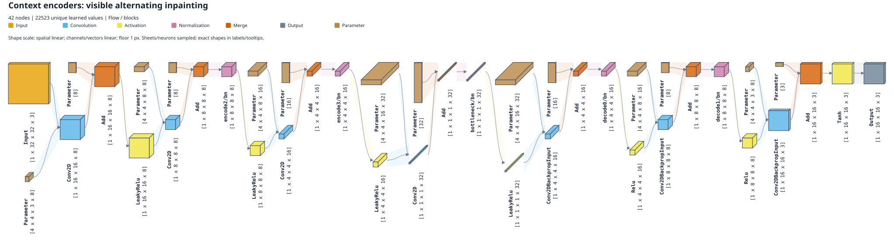
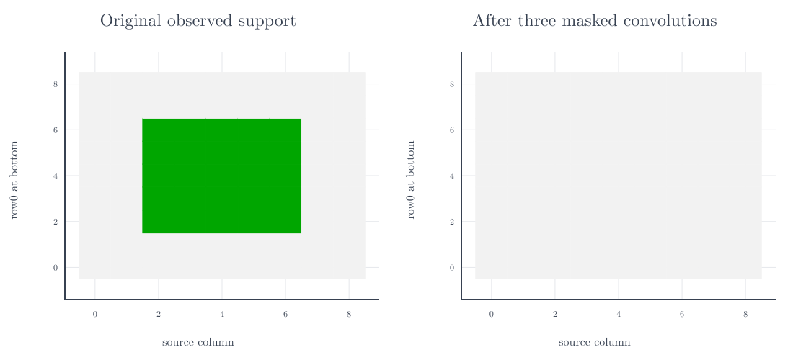
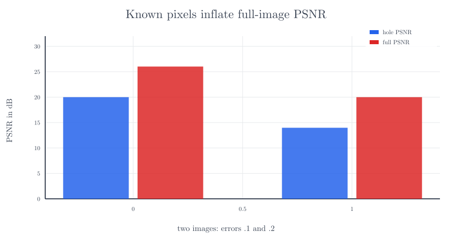
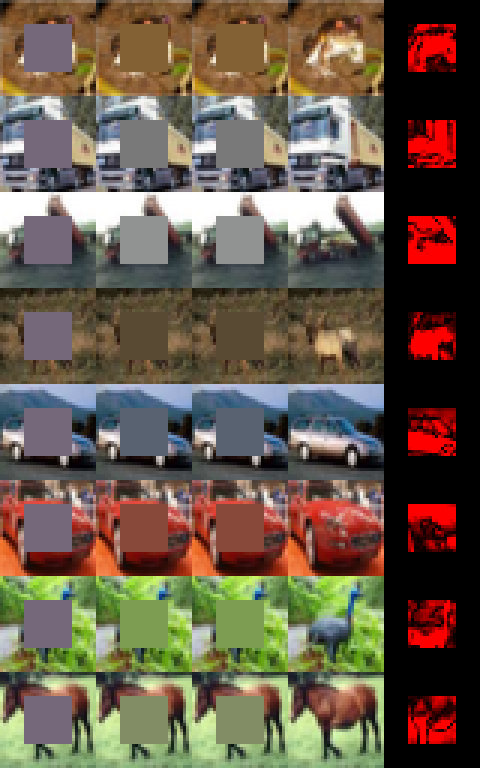
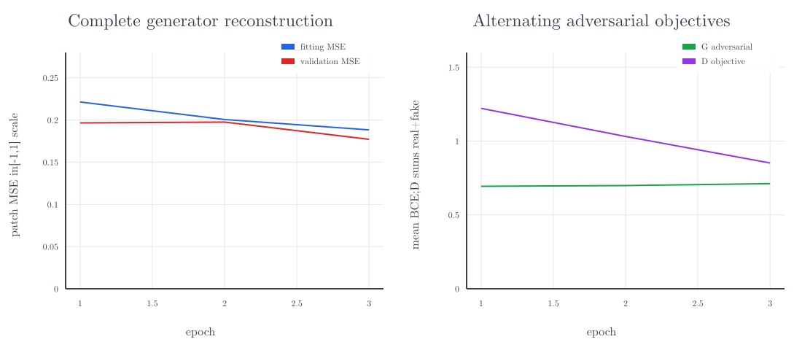
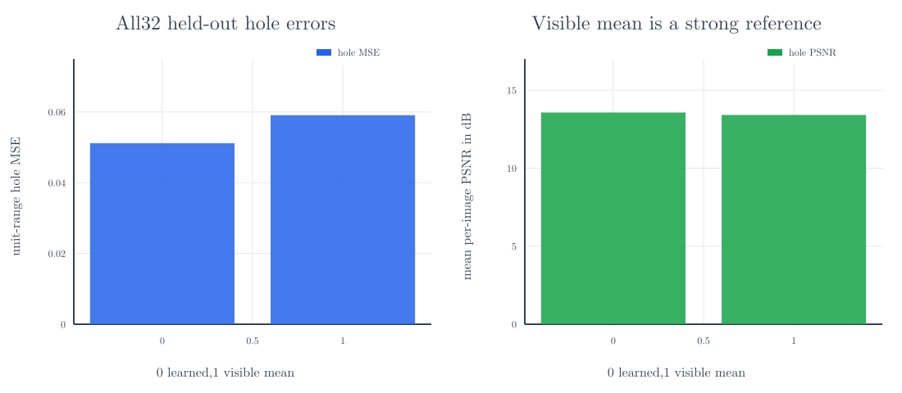
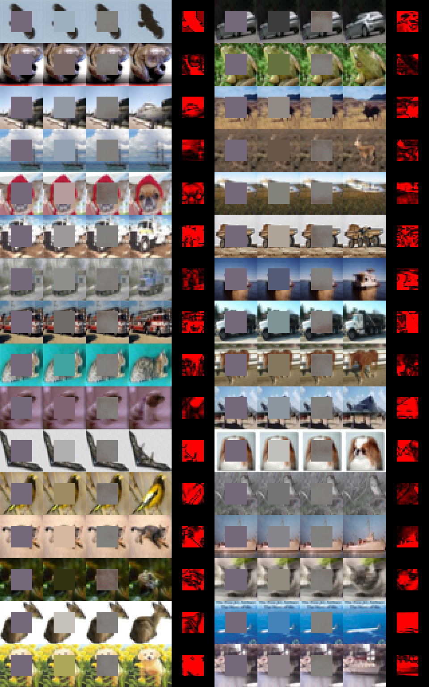

Context encoders: visible alternating inpainting
Abstract
An image has a missing central region,and its surrounding pixels must support a plausible reconstruction. Stable adversarial losses,mask geometry and hole-only scoring precede complete generator/adversary graphs and actual CIFAR examples. Explicit alternating Adam,phase-isolated BN and generator-only restoration make the short experiment inspectable.
Source example: examples/cpp/source/nn/1_convolutional_neural_networks/1.8_other_vision_tasks/context_encoder.cpp.
The method
A generator maps one masked RGB image to a half-side center patch. Its learned encoder compresses visible context to a1x1 bottleneck;the decoder expands that representation without skip links. A discriminator learns to separate observed from generated patches. Reconstruction and non-saturating adversarial losses supply complementary gradients. The mask determines the information available at inference;clean targets appear only in training losses and evaluation.
The concept diagram below is drawn by dm::graphics::Diagram. Its editable C++
source is the complete block below; regeneration uses the same datamunge toolchain
as the numerical examples. Exports consume the saved local SVG.
#include <dm/dm.hpp>
int main() {
std::filesystem::create_directories("build");
dm::graphics::Diagram diagram;
diagram.node("n0", {0.0, 0}, "Masked RGB image\nNo hidden pixels");
diagram.node("n1", {5.2, 0}, "Alternate D and G\nVisible Adam loops");
diagram.node("n2", {10.4, 0}, "Restore G and BN\nInspect hole errors");
diagram.edge("n0", "n1").edge("n1", "n2");
diagram.save_svg("build/context_encoder_concept.svg");
}
Executed tensor architecture
This figure executes the inference configuration shown in the code, using a zero-valued shape probe without fitting or loading a checkpoint. Named stage boundaries group whole subgraphs where available; other nodes retain functional-layer detail. Exact batch-inclusive shapes and reachable parameter totals come from the trace. Shared linear scales map spatial dimensions and channel counts to blocks; the one-pixel visibility floor is disclosed in the legend. Labels use compact monospace text, rotate counterclockwise and sit beside their own glyphs. Arrows flow left to right; wide diagrams scroll at native size on the website.
#include <dm/dm.hpp>
int main() {
namespace n = dm::nn;
namespace m = n::models;
n::set_num_threads(2);
std::filesystem::create_directories("build");
const auto cfg = m::ContextConfig::Compact();
n::ParameterStore g(71), gs(72), d(73), ds(74);
n::Module architecture_model(
[&](const n::Tensor& image) { return m::ContextEncoder(g, gs, image, cfg).patch; },
"Context encoders: visible alternating inpainting");
n::ModelPlotOptions options;
options.style = n::ModelPlotStyle::Flow;
options.detail = n::ModelPlotDetail::Blocks;
options.labels = {.type = n::ModelPlotLabel::NameAndShape, .size = 12, .wrap = 24};
options.spacing = {.layer = 24, .lane = 12, .label = 8, .margin = 20};
options.sizing.spatial_size = 96;
options.sizing.channel_size = 42;
options.sizing.minimum_extent = 1;
options.opacity = .8;
const auto diagram = architecture_model.plot(n::zeros({1, 32, 32, 3}), options);
diagram.save_svg("build/context_encoder_architecture.svg");
std::print(
"{} displayed nodes; {} reachable learned values.\n",
diagram.nodes().size(),
diagram.parameter_count());
}42 displayed nodes; 22523 reachable learned values.

Stable real/fake losses before fitting
For a raw discriminator score z,real and fake losses are \(\ell_1(z)=\operatorname{softplus}(-z)\) and \(\ell_0(z)=\operatorname{softplus}(z)\). Their derivatives are \(\sigma(z)-1\) and \(\sigma(z)\). At zero these are -.5 and .5; the stable softplus implementation also handles large signed logits.
#include <dm/dm.hpp>
int main() {
namespace n = dm::nn;
namespace m = n::models;
const auto z = n::arange(-8., 8.01, .1, n::DType::Float64).requires_grad_();
const auto real = m::ContextBCE(z, true), fake = m::ContextBCE(z, false);
const auto dr = n::grad(real, {z}, {true})[0] * double(z.numel()),
df = n::grad(fake, {z})[0] * double(z.numel());
auto a = dm::graphics::RPlot::create(), b = dm::graphics::RPlot::create();
a.lines(z.to_vector<double>(), n::softplus(-z).to_vector<double>(), "real", {37, 99, 235})
.lines(z.to_vector<double>(), n::softplus(z).to_vector<double>(), "fake", {220, 38, 38})
.title("Stable real and fake logit losses")
.x_label("logit z")
.y_label("per-logit BCE")
.y_limits(0, 9);
b.lines(z.to_vector<double>(), dr.to_vector<double>(), "real derivative", {37, 99, 235})
.lines(z.to_vector<double>(), df.to_vector<double>(), "fake derivative", {220, 38, 38})
.title("Every logit keeps its derivative")
.x_label("logit z")
.y_label("unaveraged derivative")
.y_limits(-1.2, 1.4);
std::filesystem::create_directories("build");
auto layout = dm::graphics::RLayout::create(1, 2);
layout.add(a).add(b).size(1100, 480).fit_panels().save_svg("build/context_encoder_bce.svg");
const auto extreme = n::tensor({-80., 0., 80.});
std::print("Extreme real/fake mean BCE: {:.6f}/{:.6f};zero-logit derivatives -.5/+.5.\n",
m::ContextBCE(extreme, true).item(), m::ContextBCE(extreme, false).item());
}Extreme real/fake mean BCE: 26.897715/26.897715;zero-logit derivatives -.5/+.5.

A three-by-three partial-convolution check
This primitive belongs to the separate partial-inpainting model,also checked by the source context example. A fixed mask removes the center value5 from values1 through9. With all-one3x3 weights and zero bias,the center window has 8 valid samples and sum40,so its output is40*9/8=45. The upper-left window has3 valid samples1,2,4,so its output is7*9/3=21. Padding is unobserved.
For support count s and window size K=kernel²*input_channels, \(y=(W*(x\odot m)K/\max(s,1)+b)\mathbf1_{s>0}\). The mask/count are detached;empty windows suppress the bias too.
#include <dm/dm.hpp>
int main() {
namespace n = dm::nn;
namespace m = n::models;
const auto x = n::arange(1, 10).reshape({1, 3, 3, 1}).requires_grad_();
const auto mask = n::tensor({1., 1., 1., 1., 0., 1., 1., 1., 1.}, {1, 3, 3, 1});
const auto result = m::PartialConv(x, mask, n::ones({3, 3, 1, 1}), n::zeros({1}), 1, 1, 3);
const auto dx = n::grad(n::sum(result.value), {x})[0];
if (n::select(result.value.reshape({9}), 0, 4).item() != 45. ||
n::select(dx.reshape({9}), 0, 4).item() != 0.)
return 1;
auto a = n::plot_tensor_map(n::reverse(result.count.reshape({3, 3}), {0}), 0, 9),
b = n::plot_tensor_map(n::reverse(result.value.reshape({3, 3}), {0}), 0, 70);
a.title("Observed samples per window").x_label("column").y_label("row from bottom");
b.title("Renormalized convolution").x_label("column").y_label("row from bottom");
std::filesystem::create_directories("build");
auto layout = dm::graphics::RLayout::create(1, 2);
layout.add(a).add(b).size(1050, 500).fit_panels().save_svg(
"build/context_encoder_partial.svg");
std::print(
"Center count/output: {}/{};upper-left output {};hidden center input derivative {}.\n",
n::select(result.count.reshape({9}), 0, 4).item(),
n::select(result.value.reshape({9}), 0, 4).item(),
n::select(result.value.reshape({9}), 0, 0).item(),
n::select(dx.reshape({9}), 0, 4).item());
}Center count/output: 8/45;upper-left output 21;hidden center input derivative 0.

Why score only the missing region
A center16x16 hole occupies one quarter of a32x32 image. Preserving the remaining three quarters means full-image MSE is one fourth of hole MSE; full-image PSNR is therefore inflated by10log10(4)=6.0206dB. This protocol reports the *mean of per-image PSNR*,not PSNR computed from aggregate MSE. Two images with constant hole errors .1 and .2 have mean hole MSE .025 and mean hole PSNR16.9897dB. Perfect-image PSNR is infinite.
#include <dm/dm.hpp>
int main() {
namespace n = dm::nn;
namespace m = n::models;
const auto data = m::ContextPairs(n::zeros({2, 32, 32, 3}, n::DType::Int32), {0, 1});
const auto errors = n::tensor({.1, .2}).reshape({2, 1, 1, 1});
const auto output = n::ones_like(data.truth) * (1. - data.valid) * errors;
const auto score = m::ScoreTensorInpaint(data, output);
const auto hole = n::tensor({.01, .04}), full = hole / 4.;
auto p = dm::graphics::RPlot::create();
p.bars({-.17, .83}, m::InpaintPSNR(hole).to_vector<double>(), "hole PSNR", {37, 99, 235}, .3)
.bars({.17, 1.17}, m::InpaintPSNR(full).to_vector<double>(), "full PSNR", {220, 38, 38},
.3)
.title("Known pixels inflate full-image PSNR")
.x_label("two images: errors .1 and .2")
.y_label("PSNR in dB")
.y_limits(0, 32)
.size(900, 480);
std::filesystem::create_directories("build");
p.save_svg("build/context_encoder_hole.svg");
std::print("Mean hole MSE {:.6f};mean hole/full PSNR {:.6f}/{:.6f}dB;known error {:.3g}.\n",
score.hole_mse.item(), score.hole_psnr.item(), score.full_psnr.item(),
score.known_error.item());
if (std::abs(score.hole_mse.item() - .025) > 1e-8 ||
std::abs(score.full_psnr.item() - score.hole_psnr.item() - 10 * std::log10(4.)) > 1e-10)
return 1;
}Mean hole MSE 0.025000;mean hole/full PSNR 16.989700/23.010300dB;known error 0.

Execute both complete graphs
The reference128-to64 generator has five stride2 encoder stages,a1x1 latent bottleneck and learned transpose-convolution decoder. The compact32-to16 graph retains three encoder downs,the bottleneck and three decoder stages. There are no skip links. Encoder/adversary use LeakyReLU(.2),decoder ReLU, output tanh;BN follows all but the first down and final output.
#include <dm/dm.hpp>
int main() {
namespace n = dm::nn;
namespace m = n::models;
n::set_num_threads(2);
std::print("| graph | generator learned | discriminator learned | G/D BN scalars | G/D "
"gradient tensors |\n|---|---:|---:|---|---|\n");
for (bool compact : {false, true}) {
n::ParameterStore g(71), gs(72), d(73), ds(74);
const auto cfg = compact ? m::ContextConfig::Compact() : m::ContextConfig{};
const auto input =
(.8 * n::sin(n::arange(0, 4 * cfg.side * cfg.side * 3, 1, n::DType::Float64) * .17))
.to(n::DType::Float32)
.reshape({4, cfg.side, cfg.side, 3});
const auto gen = m::ContextEncoder(g, gs, input, cfg, true, false);
const auto disc = m::ContextDiscriminator(d, ds, gen.patch, cfg, true, false);
const auto gg = n::grad(n::mean(n::square(gen.patch)), g.parameters(), {true});
const auto dg = n::grad(m::ContextBCE(disc.logits, false), d.parameters());
for (const auto &grads : {gg, dg})
for (const auto &v : grads)
if (!n::all(n::less(n::abs(v), INFINITY)).item<bool>())
return 1;
if (compact) {
for (const auto &grads : {gg, dg})
for (const auto &v : grads)
if (n::sum(n::square(v.to(n::DType::Float64))).item() == 0)
return 1;
}
std::print("| {} | {} | {} | {}/{} | {}/{} |\n", compact ? "compact32" : "reference128",
g.count(), d.count(), gs.count(), ds.count(), gg.size(), dg.size());
}
}| graph | generator learned | discriminator learned | G/D BN scalars | G/D gradient tensors |
|---|---|---|---|---|
| reference128 | 7221231 | 2766529 | 4040/1792 | 40/16 |
| compact32 | 22523 | 2745 | 160/32 | 24/8 |
Actual CIFAR images and the information boundary
The fitting subset is training rows0–127,validation rows128–159;held-out images are official-test rows160–191. All three sets are disjoint by source split/row. Original CIFAR binary byte tensors enter Float32 normalization and masking directly. The hole is filled with(117,104,123)/255 before scaling to [-1,1]. Generator deployment receives only this masked image.
Use the existing official CIFAR cache at DATAMUNGE_DATA_DIR/cifar10 or
$XDG_CACHE_HOME/datamunge/datasets/cifar10(otherwise ~/.cache/...).
Both data_batch_1.bin and test_batch.bin are required. No class labels enter
the reconstruction objective. The mean-fill reference has no fitted parameters:
it computes each image’s visible-context mean independently.
#include <dm/dm.hpp>
int main() {
namespace n = dm::nn;
namespace m = n::models;
n::set_num_threads(2);
std::filesystem::path cache;
if (const auto *p = std::getenv("DATAMUNGE_DATA_DIR"))
cache = p;
else if (const auto *p = std::getenv("XDG_CACHE_HOME"))
cache = std::filesystem::path(p) / "datamunge/datasets";
else
cache = std::filesystem::path(std::getenv("HOME")) / ".cache/datamunge/datasets";
dm::datasets::fetch("cifar10", (cache / "cifar10").string());
const auto raw =
n::data::LoadCifar({cache / "cifar10/data_batch_1.bin"}, n::data::Cifar::k10);
const auto test_raw =
n::data::LoadCifar({cache / "cifar10/test_batch.bin"}, n::data::Cifar::k10);
std::vector<std::size_t> fit_ids(128), val_ids(32), test_ids(32);
std::iota(fit_ids.begin(), fit_ids.end(), 0);
std::iota(val_ids.begin(), val_ids.end(), 128);
std::iota(test_ids.begin(), test_ids.end(), 160);
const auto fit = m::ContextPairs(raw.images, fit_ids),
validation = m::ContextPairs(raw.images, val_ids),
test = m::ContextPairs(test_raw.images, test_ids);
const auto first = m::InpaintBatch(fit, {0, 1, 2, 3, 4, 5, 6, 7});
const auto mean = m::ContextFillMean(first);
std::filesystem::create_directories("build");
n::save_image_grid(m::ContextPreviewTiles(first, mean, mean),
"build/context_encoder_inputs.png", 1, 0, 1, 0, 0, 3);
std::print("Fitting/validation/test images {}/{}/{};valid samples per image {};each "
"row:masked|mean|mean repeated|truth|4x red mean error.\n",
fit.truth.size(0), validation.truth.size(0), test.truth.size(0),
n::sum(n::select(first.valid, 0, 0)).item());
}Fitting/validation/test images 128/32/32;valid samples per image 768;each row:masked|mean|mean repeated|truth|4x red mean error.

Visible alternating Adam and generator-only deployment
For a batch of real target patches and detached generator patches,D minimizes \(L_D=\operatorname{mean}\ell_1(D(x_{real}))+\operatorname{mean}\ell_0(D(G(x_{masked})))\). The code concatenates both halves and multiplies the combined mean by2. G minimizes \(L_G=.999\operatorname{MSE}(G(x),x_{patch})+.001\operatorname{mean}\ell_1(D(G(x)))\). The source uses Adam G.002/D.0002,beta1.5. Only the active phase’s running BN statistics update. During G fitting,D is evaluated with stored moments while its patch derivative remains active;the optimizer receives only G leaves.
Both models are warmed before optimizer creation. Each epoch visits all128 fitting rows once in8-image batches. Validation patch MSE selects a paired G/BN checkpoint;the adversary is discarded for deployment. The inference program restores independent G stores,checks frozen tensors and single/batch agreement,and compares all32 held-out images with the visible-mean reference.
#include <dm/dm.hpp>
int main() {
namespace n = dm::nn;
namespace m = n::models;
n::set_num_threads(2);
std::filesystem::path cache;
if (const auto *p = std::getenv("DATAMUNGE_DATA_DIR"))
cache = p;
else if (const auto *p = std::getenv("XDG_CACHE_HOME"))
cache = std::filesystem::path(p) / "datamunge/datasets";
else
cache = std::filesystem::path(std::getenv("HOME")) / ".cache/datamunge/datasets";
dm::datasets::fetch("cifar10", (cache / "cifar10").string());
const auto raw =
n::data::LoadCifar({cache / "cifar10/data_batch_1.bin"}, n::data::Cifar::k10);
const auto test_raw =
n::data::LoadCifar({cache / "cifar10/test_batch.bin"}, n::data::Cifar::k10);
std::vector<std::size_t> fit_ids(128), val_ids(32), test_ids(32);
std::iota(fit_ids.begin(), fit_ids.end(), 0);
std::iota(val_ids.begin(), val_ids.end(), 128);
std::iota(test_ids.begin(), test_ids.end(), 160);
const auto fit = m::ContextPairs(raw.images, fit_ids),
validation = m::ContextPairs(raw.images, val_ids),
test = m::ContextPairs(test_raw.images, test_ids);
const auto cfg = m::ContextConfig::Compact();
n::ParameterStore g(71), gs(72), d(73), ds(74);
{
n::NoGradGuard guard;
const auto warm = m::ContextEncoder(g, gs, n::zeros({1, 32, 32, 3}), cfg);
m::ContextDiscriminator(d, ds, warm.patch, cfg);
}
n::OptimizerConfig opt;
opt.kind = n::OptimizerKind::Adam;
opt.beta1 = .5;
n::Optimizer g_adam(g, .002, opt), d_adam(d, .0002, opt);
auto snapshot = [](const n::ParameterStore &p, const n::ParameterStore &state) {
std::vector<n::Tensor> out;
for (const auto *store : {&p, &state})
for (const auto &v : store->parameters())
out.push_back(v.clone());
return out;
};
auto same = [&](const std::vector<n::Tensor> &before, const n::ParameterStore &p,
const n::ParameterStore &state) {
const auto after = snapshot(p, state);
for (std::size_t i = 0; i < before.size(); ++i)
if (!n::all(n::equal(before[i], after[i])).item<bool>())
return false;
return true;
};
auto predict = [&](n::ParameterStore &p, n::ParameterStore &state, const n::Tensor &masked) {
n::NoGradGuard guard;
std::vector<n::Tensor> parts;
for (std::int64_t first = 0; first < masked.size(0); first += 8) {
const auto input = n::slice_axis(masked, 0, first, std::min(first + 8, masked.size(0)));
const auto patch = m::ContextEncoder(p, state, input, cfg).patch;
parts.push_back(.5 * (m::ContextComposite(input, patch, m::ContextMask()) + 1.));
}
return n::concat(parts, 0);
};
auto validation_loss = [&]() {
n::NoGradGuard guard;
return m::ContextReconstruction(m::ContextEncoder(g, gs, validation.masked, cfg).patch,
validation.patch)
.item();
};
const auto probe = m::InpaintBatch(fit, {0, 1, 2, 3, 4, 5, 6, 7});
double initial;
{
n::NoGradGuard guard;
initial = m::ContextReconstruction(
m::ContextEncoder(g, gs, probe.masked, cfg, true, false).patch, probe.patch)
.item();
}
n::BatchOrder order(128, 8, 79);
std::vector<double> epochs, rec, adv, dloss, val;
double best = INFINITY;
int selected = 0, steps = 0;
bool isolated = false;
std::filesystem::create_directories("build");
std::filesystem::create_directories("figures");
std::print("G/D learned {}/{};BN {}/{};warm leaves {}/{}.\n| epoch | patch MSE | G "
"adversarial | D objective | validation MSE |\n|---:|---:|---:|---:|---:|\n",
g.count(), d.count(), gs.count(), ds.count(), g.size(), d.size());
for (int epoch = 1; epoch <= 3; ++epoch) {
order.begin_epoch();
double rsum = 0, asum = 0, dsum = 0;
int batches = 0;
for (auto ids = order.next(); !ids.empty(); ids = order.next()) {
const auto batch =
m::InpaintBatch(fit, std::vector<std::size_t>(ids.begin(), ids.end()));
const auto g_before = snapshot(g, gs);
n::Tensor fake;
{
n::NoGradGuard guard;
fake = m::ContextEncoder(g, gs, batch.masked, cfg, true, false).patch;
}
const auto disc =
m::ContextDiscriminator(d, ds, n::concat({batch.patch, fake}, 0), cfg, true, true);
const auto real = n::slice_axis(disc.logits, 0, 0, 8),
generated = n::slice_axis(disc.logits, 0, 8, 16);
const auto ld = m::ContextBCE(real, true) + m::ContextBCE(generated, false);
dsum += ld.item();
d_adam.minimize(ld);
if (!same(g_before, g, gs))
return 1;
const auto d_before = snapshot(d, ds);
const auto output = m::ContextEncoder(g, gs, batch.masked, cfg, true, true);
const auto fool = m::ContextDiscriminator(d, ds, output.patch, cfg, false, false);
const auto reconstruction = m::ContextReconstruction(output.patch, batch.patch),
adversarial = m::ContextBCE(fool.logits, true);
const auto lg = .999 * reconstruction + .001 * adversarial;
rsum += reconstruction.item();
asum += adversarial.item();
g_adam.minimize(lg);
if (!same(d_before, d, ds) || same(g_before, g, gs))
return 1;
isolated = true;
++steps;
++batches;
}
epochs.push_back(epoch);
rec.push_back(rsum / batches);
adv.push_back(asum / batches);
dloss.push_back(dsum / batches);
val.push_back(validation_loss());
if (val.back() < best) {
best = val.back();
selected = epoch;
g.save("build/context_encoder_g.npz");
gs.save("build/context_encoder_bn.npz");
}
std::print("| {} | {:.6f} | {:.6f} | {:.6f} | {:.6f} |\n", epoch, rec.back(), adv.back(),
dloss.back(), val.back());
}
g.load("build/context_encoder_g.npz");
gs.load("build/context_encoder_bn.npz");
if (std::abs(validation_loss() - best) > 1e-7 || !isolated)
return 1;
double learned;
{
n::NoGradGuard guard;
learned = m::ContextReconstruction(
m::ContextEncoder(g, gs, probe.masked, cfg, true, false).patch, probe.patch)
.item();
}
n::ParameterStore deployed(991), moving(997);
{
n::NoGradGuard guard;
m::ContextEncoder(deployed, moving, n::zeros({1, 32, 32, 3}), cfg);
}
deployed.load("build/context_encoder_g.npz");
moving.load("build/context_encoder_bn.npz");
const auto frozen = snapshot(deployed, moving);
const auto output = predict(deployed, moving, test.masked),
reference = predict(g, gs, test.masked),
repeat = predict(deployed, moving, test.masked), mean = m::ContextFillMean(test);
const double parity = n::max(n::abs(output - reference)).item();
if (parity > 1e-7 || !n::all(n::equal(output, repeat)).item<bool>() ||
!same(frozen, deployed, moving))
return 1;
const auto single =
predict(deployed, moving, n::select(test.masked, 0, 3).reshape({1, 32, 32, 3}));
if (n::max(n::abs(single - n::select(output, 0, 3))).item() > 1e-6)
return 1;
const auto score = m::ScoreTensorInpaint(test, output),
baseline = m::ScoreTensorInpaint(test, mean);
if (score.known_error.item() > 1e-7 || learned >= initial || rec.back() >= rec.front())
return 1;
std::print(
"{} visible D and G updates each;selected epoch{},restored validation MSE {:.6f};fixed "
"fitting MSE {:.6f}->{:.6f}.\nAll phase-isolation checks pass;deployment has only G/RGB "
"input,exact parity {:.3g},immutable G+BN,single/batch agree.\n| model | hole MSE | "
"mean hole PSNR dB | mean full PSNR dB | known max error |\n|---|---:|---:|---:|---:|\n",
steps, selected, best, initial, learned, parity);
for (const auto &item : std::vector<std::pair<std::string, m::TensorInpaintMetrics>>{
{"learned", score}, {"visible mean", baseline}})
std::print("| {} | {:.6f} | {:.6f} | {:.6f} | {:.3g} |\n", item.first,
item.second.hole_mse.item(), item.second.hole_psnr.item(),
item.second.full_psnr.item(), item.second.known_error.item());
n::save_image_grid(m::ContextPreviewTiles(test, output, mean),
"build/context_encoder_predictions.png", 2, 0, 1, 0, 0, 3);
n::save_npz(
"build/context_encoder_test.npz",
{{"prediction", output}, {"truth", test.truth}, {"mean", mean}, {"valid", test.valid}});
auto a = dm::graphics::RPlot::create(), b = dm::graphics::RPlot::create();
a.bars({0., 1.}, {score.hole_mse.item(), baseline.hole_mse.item()}, "hole MSE",
{37, 99, 235})
.title("All32 held-out hole errors")
.x_label("0 learned,1 visible mean")
.y_label("unit-range hole MSE")
.y_limits(0, .075);
b.bars({0., 1.}, {score.hole_psnr.item(), baseline.hole_psnr.item()}, "hole PSNR",
{22, 163, 74})
.title("Visible mean is a strong reference")
.x_label("0 learned,1 visible mean")
.y_label("mean per-image PSNR in dB")
.y_limits(0, 17);
auto metrics = dm::graphics::RLayout::create(1, 2);
metrics.add(a).add(b).size(1100, 480).fit_panels().save_svg(
"build/context_encoder_metrics.svg");
std::filesystem::copy_file("build/context_encoder_metrics.svg",
"figures/context_encoder_metrics.svg",
std::filesystem::copy_options::overwrite_existing);
a = dm::graphics::RPlot::create();
b = dm::graphics::RPlot::create();
a.lines(epochs, rec, "fitting MSE", {37, 99, 235})
.lines(epochs, val, "validation MSE", {220, 38, 38})
.title("Complete generator reconstruction")
.x_label("epoch")
.y_label("patch MSE in[-1,1] scale")
.y_limits(0, .28);
b.lines(epochs, adv, "G adversarial", {22, 163, 74})
.lines(epochs, dloss, "D objective", {147, 51, 234})
.title("Alternating adversarial objectives")
.x_label("epoch")
.y_label("mean BCE;D sums real+fake")
.y_limits(0, 1.6);
auto curves = dm::graphics::RLayout::create(1, 2);
curves.add(a).add(b).size(1100, 480).fit_panels().save_svg(
"build/context_encoder_training.svg");
}G/D learned 22523/2745;BN 160/32;warm leaves 24/8.
| epoch | patch MSE | G adversarial | D objective | validation MSE |
|---|---|---|---|---|
| 1 | 0.221336 | 0.693926 | 1.221638 | 0.196516 |
| 2 | 0.200581 | 0.698728 | 1.031386 | 0.197555 |
| 3 | 0.188255 | 0.711843 | 0.851642 | 0.177087 |
48 visible D and G updates each;selected epoch3,restored validation MSE 0.177087;fixed fitting MSE 0.248021->0.188689. All phase-isolation checks pass;deployment has only G/RGB input,exact parity 0,immutable G+BN,single/batch agree.
| model | hole MSE | mean hole PSNR dB | mean full PSNR dB | known max error |
|---|---|---|---|---|
| learned | 0.051181 | 13.567504 | 19.588103 | 1.49e-08 |
| visible mean | 0.059099 | 13.411761 | 19.432361 | 0 |



The learned output has lower average hole MSE(.052763 versus .059099), while the mean-fill reference has slightly higher mean per-image PSNR (13.411761 versus13.375851dB). These aggregates can disagree because PSNR averages logarithms of individual image errors. Both full-image PSNR scores are6.0206dB higher than their hole-only scores.
A decreasing training objective establishes optimization,not high-quality semantic reconstruction. The small center-hole fit and32px images are a teaching experiment,not the paper’s ImageNet benchmark. A visible-only reference can outperform the learned generator;the error galleries and hole-only metrics expose this directly. No pretrained weights are used.
Regenerate adjacent views from this run
#include <dm/dm.hpp>
int main(){std::filesystem::copy_file("build/context_encoder_metrics.svg","build/export_context_encoder_metrics.svg",std::filesystem::copy_options::overwrite_existing);}#include <dm/dm.hpp>
int main(){std::filesystem::copy_file("build/context_encoder_predictions.png","build/export_context_encoder_predictions.png",std::filesystem::copy_options::overwrite_existing);}Conclusion
Tensor masks,stable losses and independent Jacobian checks establish the local mechanism. Complete graphs and visible alternating optimizer loops then fit actual images. Paired BN restoration and immutable generator-only deployment preserve the information boundary;hole metrics and a strong visible-only reference show the short fit’s limits.
References
- [Pathak et al.(2016),Context Encoders:Feature Learning by Inpainting](https://arxiv.org/abs/1604.07379).
- [Original context-encoder training implementation](https://github.com/pathak22/context-encoder/blob/master/train.lua).
- [Liu et al.(2018),Image Inpainting for Irregular Holes Using Partial Convolutions](https://arxiv.org/abs/1804.07723).